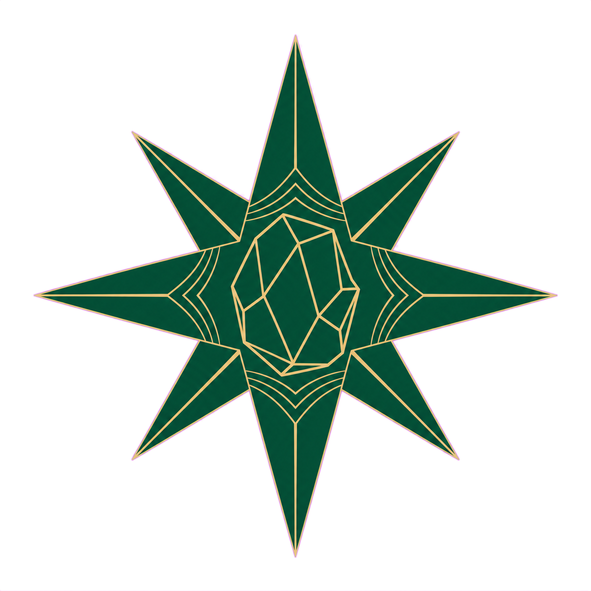
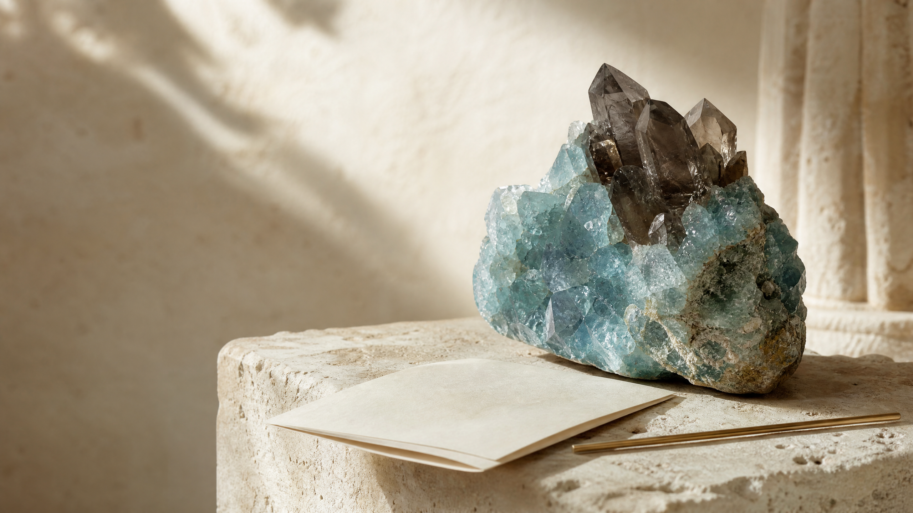
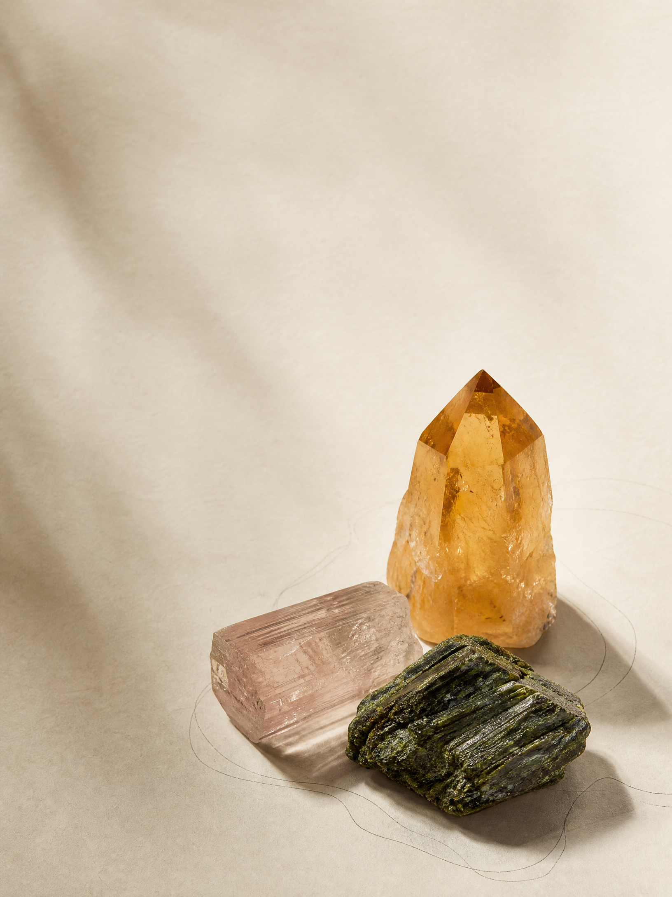
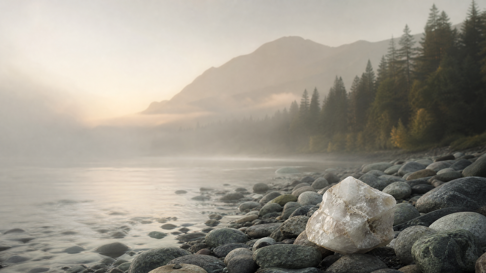

Unearthed
Raw mineral forms selected for their natural architecture, color, and sense of place.
Discover ↗
UniquePerspective 8Explore pieces ↗Ethical mineral atelier · British Columbia
Objects of rare presence—hand-selected from the landscape, then considered for the keeping.

01 / The atelier
A practice of attention
Unique Perspective 8 brings a slower lens to minerals and handcrafted adornment. We are drawn to the marks time leaves behind—the fracture, the inclusion, the unrepeatable shade of a stone found in its own terrain.
Every piece begins as a field discovery and is offered with the origin still visible. Nothing is overworked. Nothing is made to hurry.
Read the field notes ↗Current collection
Start with the surface. Stay for the story beneath it.
Raw mineral forms selected for their natural architecture, color, and sense of place.
Discover ↗Quiet jewelry and objects finished with respect for the material’s original character.
Discover ↗
Object notes
“A stone does not need to be perfect to be extraordinary. It only needs to be itself.”
A guiding thought at the atelier
01Land
first
02Hands
second
03Yours
always

The origin
From river-worn edges to the rougher ground beyond them, our point of view remains local, curious, and led by the material itself.
Enter the field journal ↗From the journal